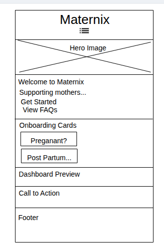
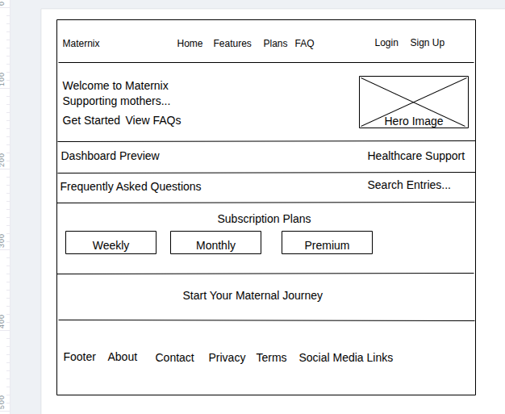

Site Name
Maternix
Maternix is a modern maternal healthcare platform designed to support women throughout their reproductive journey. The name combines the ideas of maternal care, innovation, and trusted healthcare technology.
Optional Domain: maternix.com
Site Purpose
Maternix provides women with personalized maternal healthcare support from trying to conceive through pregnancy, childbirth, postpartum recovery, breastfeeding, and early childhood development.
The website offers educational resources, pregnancy tracking, healthcare professional consultations, appointment reminders, vaccination schedules, baby development tracking, and subscription based maternal care services.
Target Audience
- Women trying to conceive
- Pregnant women
- New mothers
- Parents of infants
- Families seeking trusted maternal healthcare information
Visitor Scenarios
- How can I chat with a licensed nurse or midwife about my pregnancy concerns?
- Can I track my baby's weekly development and receive antenatal appointment reminders?
- Which subscription plan gives me access to healthcare professionals?
- How do I know if my pregnancy symptoms require immediate medical attention?
Website Features
- Personalized pregnancy tracking
- Trying to conceive guidance
- Antenatal appointment scheduling
- Medication reminders
- Baby development updates
- Nutrition guidance
- Exercise recommendations
- Daily health journal
- Baby kick counter
- Contraction timer
- Hospital bag checklist
- Pregnancy emergency education
- Breastfeeding support
- Postpartum recovery guidance
- Baby vaccination reminders
- Growth milestone tracking
- WhatsApp consultation
- Phone consultation
- Frequently Asked Questions
- Subscription plans
Color Scheme
| Color | Hex Code | Usage |
|---|---|---|
| Soft Pink | #F8C8DC | Buttons, badges, highlights |
| Primary Blue | #0D6EFD | Navigation, links, headings |
| White | #FFFFFF | Main background |
| Light Gray | #F8F9FA | Cards and section backgrounds |
| Dark Gray | #343A40 | Footer and emphasis sections |
Typography
| Font | Usage |
|---|---|
| Poppins | Headings and section titles |
| Open Sans | Body text and paragraphs |
| Montserrat | Buttons, badges, pricing and call to action text |
CSS
The website will use responsive CSS to create a clean, modern, and mobile friendly maternal healthcare experience. Styles will implement the selected typography, color scheme, spacing, cards, buttons, and responsive layouts.


Testing
- W3C HTML Markup Validator
- WAVE Web Accessibility Evaluation Tool
- Google PageSpeed Insights
- Chrome Lighthouse
- WebAIM Color Contrast Checker